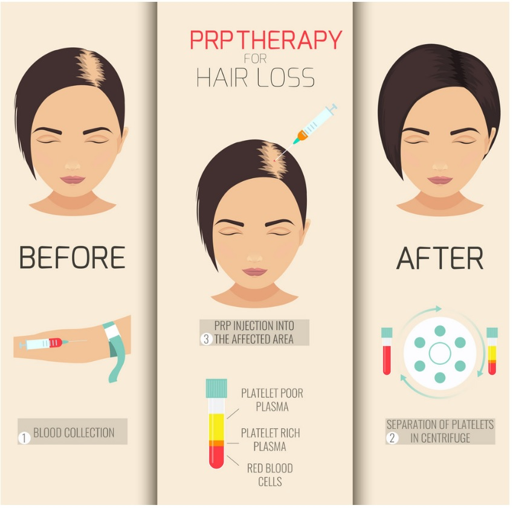

Our blood is made of two main components, red blood cells, and plasma. The plasma contains white blood cells and platelets, which are rich in growth factors, these growth factors are necessary in the body's natural healing process. PRP is the separation of those platelets and plasma from the rest of the blood, which results in high concentration of the platelets; hence platelet-rich plasma (PRP). The Platelet's growth factors and signaling cytokines help stimulate the stem cells; triggers the healing cascade, restores new blood growth, collagen synthesis, new cell growth and new tissue regeneration.
PRP for hair regrowth, begins with a standard blood draw from the patient's arm. Next, the tube of blood is put into a machine called a centrifuge, which spins the blood tube to separate out the red blood cells from the plasma. The plasma, rich in platelets, is then injected directly into the scalp at the level of the hair follicles. The growth factors can help stimulate the activity of the hair follicles and promote new hair growth. The use of PRP is a great treatment option for hair loss because it has a number of scientifically based articles showing its efficacy increasing hair count, hair thickness, and the growth phase of the hair cycle. The Process for Facial Rejuvenation aka the "Vampire Facial" is similar with the blood being drawn, spun in the centrifuge and separating the PRP. The treatment is a combination of a microneedling, followed by the application of PRP (platelet-rich plasma). The platelets contain high levels of growth factors, which, when applied to the skin, will stimulate cell turnover resulting in new Collagen and Elastin production, tissue regeneration, while also bringing antioxidant and hydrating properties. Platelet-rich plasma is now commonly used topically along with micro-needling to enhance penetration into the skin, and is even being injected into the skin in the same manner as dermal fillers. Topical Numbing for facial treatments and local anesthetics is used for Hair loss treatments.
Because PRP therapy involves using your own blood, you aren’t at risk for getting a communicable disease. Still, any therapy that involves injections always carries a risk of side effects such as bruising, swelling, infection, and mild tenderness. There is very minimal downtime and Tylenol is usually recommended for any discomfort after the procedure.
For Hair Loss, Anyone experiencing hair thinning and hair loss is essentially a good candidate for PRP treatments. Those with early hair loss tend to respond best and can be for both men and women. For Facial Rejuvenation or the "Vampire Facial," mostly anyone is a good candidate, particulary those with fine lines and wrinkles, solar damage, Acne scars or anyone who wants an even tone and texture and fresher appearance to their skin is an ideal candidate for the procedure.
For best results treating Hair Loss, consistency is key and it is advised to initially have 3 PRP treatment sessions to stimulate the dormant hair follicles. Each treatment is typically performed once a month for the first three to four months, and then every six months to a year thereafter, depending on the individual patient's response and results. Following this protocol, anticipated results can first be seen within two to three months. The first result that patients usually note is decreased hair shedding, followed by early regrowth and increased length of hair. For facial treatments it is recommended to have 3 PRP sessions initially, followed by a maintenance regimen that is best for you.